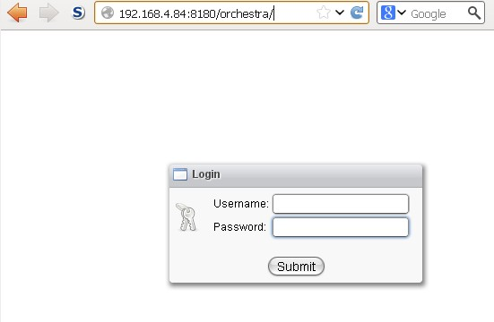
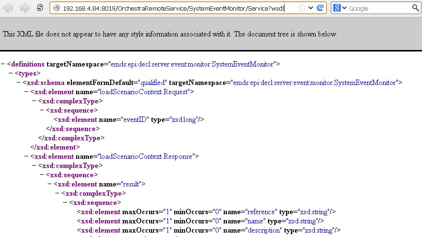

Firewall Settings

Topic content
The configuration settings described in this chapter affect only orchestra itself, no channels working through network protocols, e.g. MLLP. That means for such channels it might be necessary to open further ports in the firewall!
1.Accessing the Orchestra monitor using a Web browser
Orchestra runs as application in a servlet container usually provided by an apache tomcat. To enable access to the Orchestra monitor using a web browser, the firewall must allow the access to the servlet container.
In the context of apache tomcat normally the port 8080 must be allowed.
The used port must be configured in the file /tomcat/conf/server.xml
...
<Connector port="8180" protocol="HTTP/1.1"
connectionTimeout="20000"
redirectPort="8443" />
...
The access can be tested applying the URL http://<host>:<port>/orchestra/
An example for a monitor invocation might look like http://192.168.4.84:8180/orchestra/
Afterwards the login screen of the Orchestra monitor should appear:

2.Accessing Orchestra using Remote web services
Orchestra can be controlled and queried from outside using remote web services. Therefore access to orchestras own ports is necessary.
These ports must be configured in the group "Http" of the Orchestra configuration file /tomcat/webapps/orchestra/WEB-INF/classes/config/environment_settings.xml
<group name = "Http" >
<parameter name = "servlet.port.http" value = "8019" />
<parameter name = "servlet.port.https" value = "8443" />
<parameter name = "servlet.port.https.auth" value = "8444" />
The access can be tested applying the URL http://<host>:<port>/OrchestraRemoteService/SystemEventMonitor/Service?wsdl
Example invocations might look like:
http://192.168.4.84:8019/OrchestraRemoteService/SystemEventMonitor/Service?wsdl
https://192.168.4.84:8443/OrchestraRemoteService/SystemEventMonitor/Service?wsdl
Afterwards the WSDL (an XML document) of the web service SystemEventMonitor should appear in the browser:

Note: The Port 8443 might already be in use by tomcat!
3.Cell and cluster mode
If Orchestra runs in cell or cluster mode, possibly more ports have to be opened in the firewall.
The necessary ports are to be configured in the group "Runtime" of the Orchestra configuration file /tomcat/webapps/orchestra/WEB-INF/classes/config/environment_settings.xml
1.Cluster mode
To ensure that, in cluster mode, the two orchestra instances can communicate with each other, the port configured under node.port must be opened in the firewall.
<group name = "runtime" >
<!--
Parameters for cluster environment
==================================
node.ip Defines the IP address of this cluster node
node.port Defines the port that is used for the inter cluster-node protocol
-->
<parameter name = "node.ip" value = "127.0.0.1"/>
<parameter name = "node.port" value = "9981" />
Note: If the communication between the two instances actually works, is visible only trough the Orchestra log files or in the system events in the Orchestra monitor.
2.Cell communication
If other Orchestra cells establish a connection to this cell, that means this cell is configured as ingoing cell, then the port configured under node.port must be opened in the firewall. If a cell is configured as outgoing, nothing has to be opened in the firewall, because the tunnel is open to the remote cell, and as long as the connection is established, the communication works in both directions.
<group name = "runtime" >
<!--
local.port Defines the local tcp/ip port where the cell is
waiting for incoming requests
poolsize Defines the number of worker threads that are
responsible for processing cell messages.
-->
<parameter name = "local.port" value = "8894" />
Note: If the communication between the different cells actually works, is visible only trough the Orchestra log files or in the system events in the Orchestra monitor.
4.Default ports of Orchestra
tomcat |
8080 |
|---|---|
Orchestra servlet http |
8019 |
Orchestra servlet https |
8443 / 8444 |
cluster |
9981 |
cells |
8894 |